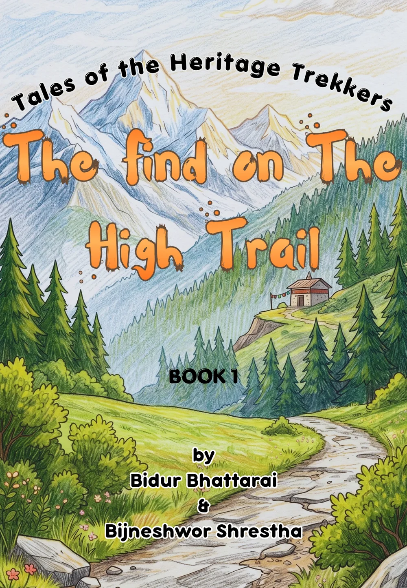
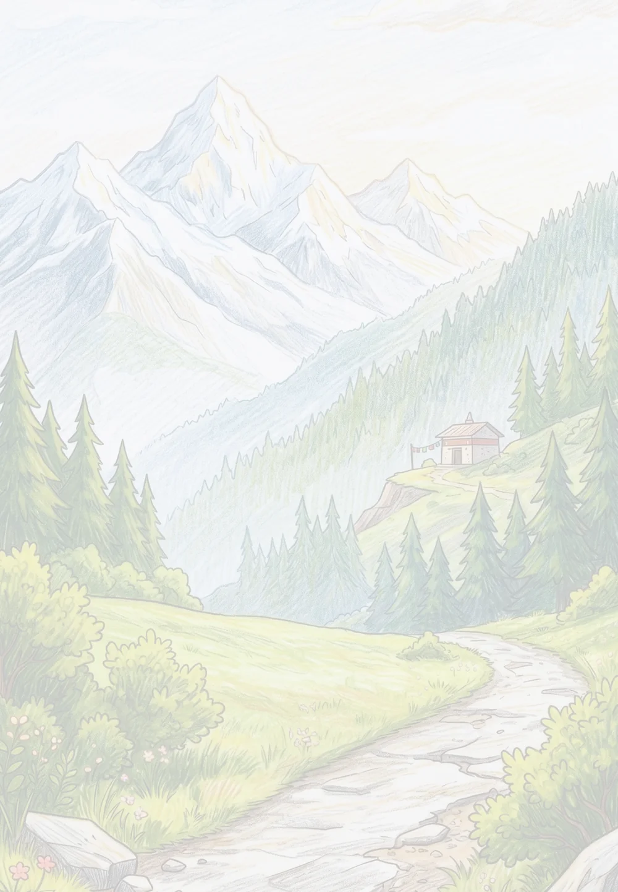
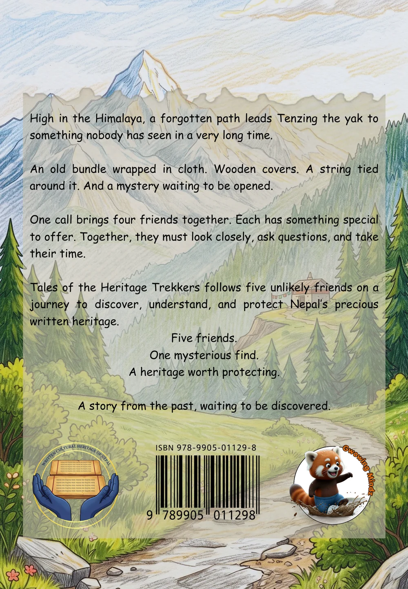

With Written Cultural Heritage of Nepal (WCHN)
Tales of the Heritage Trekkers
A children's book series that passes Nepal's manuscript traditions on to the next generation through storytelling. The stories do not follow real artefacts, but each one shows a real situation: how a manuscript ends up neglected, and what it takes to find, save and protect it.
See the series at WCHN

Say namaste to the Trekkers
Five friends, each with something special to offer. And at home, Dolma has the butter tea ready.
 Tenzing
Tenzing Sunauli
Sunauli Mitini
Mitini Ganesh
GaneshLook inside Book One



Book One has been printed.
Ask about copiesKept accurate by a manuscript researcher
Dr Bidur Bhattarai is a researcher of South Asian written heritage, with a particular focus on Nepal. He studies ancient manuscripts and written artefacts, decodes their scripts and languages, and makes the Preservation and Documentation film series.
- What a house in the Himalayan region really looks like.
- Whether a manuscript could be found in such a wild place.
- How a manuscript should be handled once it is found.